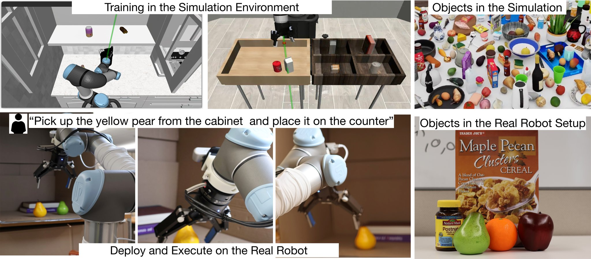
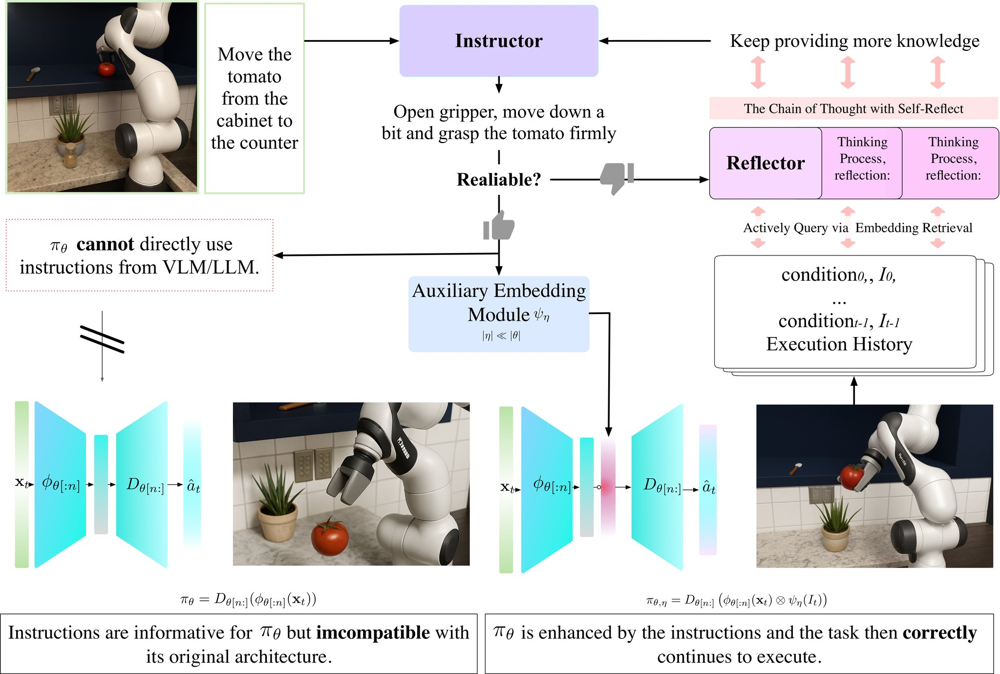
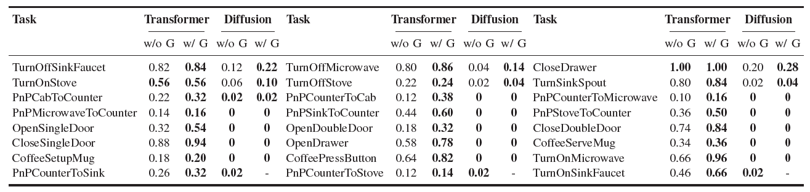
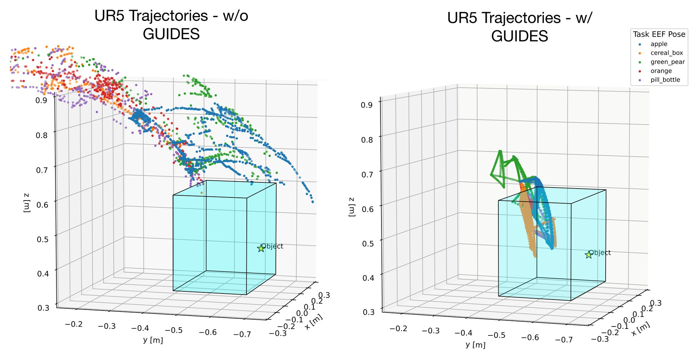
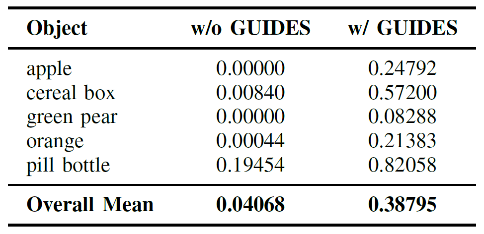
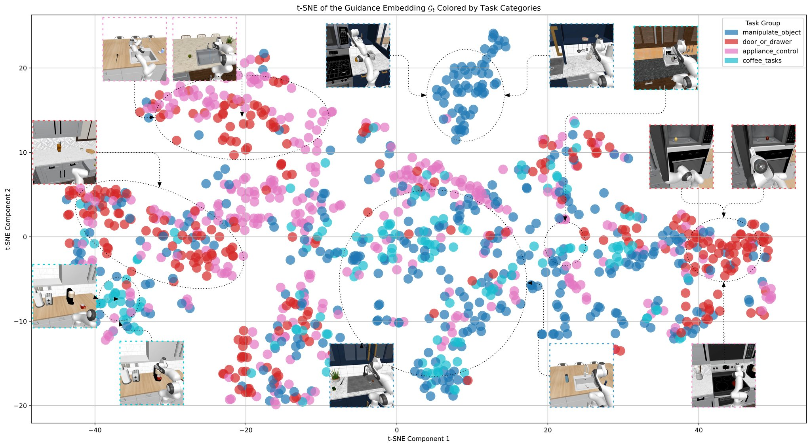

Intuitive Computing Lab at Johns Hopkins University
Trustworthy Autonomous Systems Laboratory (TASL)
Pre-trained robot policies serve as the foundation of many validated robotic systems, which encapsulate extensive embodied knowledge. However, they often lack the semantic awareness characteristic of foundation models, and replacing them entirely is impractical in many situations due to high costs and the loss of accumulated knowledge.
To address this gap, we introduce GUIDES, a lightweight framework that augments pre-trained policies with semantic guidance from foundation models without requiring architectural redesign. GUIDES employs a fine-tuned vision-language model (Instructor) to generate contextual instructions, which are encoded by an auxiliary module into guidance embeddings. These embeddings are injected into the policy's latent space, allowing the legacy model to adapt to this new semantic input through brief, targeted fine-tuning.
For inference-time robustness, a large language model-based Reflector monitors the Instructor's confidence and, when confidence is low, initiates a reasoning loop that analyzes execution history, retrieves relevant examples, and augments the VLM's context to refine subsequent actions. Extensive validation in the RoboCasa simulation environment across diverse policy architectures shows consistent and substantial improvements in task success rates. Real-world deployment on a UR5 robot further demonstrates that GUIDES enhances motion precision for critical sub-tasks such as grasping.
Overall, GUIDES offers a practical and resource-efficient pathway to upgrade, rather than replace, validated robot policies.

GUIDES consists of three main components: (1) Instructor - a fine-tuned vision-language model that generates contextual instructions based on visual observations, (2) Guidance Module - an auxiliary network that encodes instructions into guidance embeddings and injects them into the policy's latent space, and (3) Reflector - an LLM-based component that monitors confidence and refines actions through reasoning when needed.

The GUIDES framework seamlessly integrates with existing pre-trained policies. The Instructor processes visual observations to generate natural language instructions, which are then encoded into guidance embeddings by the auxiliary module. These embeddings are injected into the policy's latent representation, enabling semantic-aware decision making while preserving the original policy's learned behaviors.

GUIDES demonstrates consistent improvements across diverse policy architectures in the RoboCasa simulation environment. The framework shows substantial gains in task success rates while maintaining computational efficiency. Results indicate that semantic guidance significantly enhances the policy's ability to understand and execute complex manipulation tasks.


Real-world validation on a UR5 robot demonstrates GUIDES' practical applicability. The framework enhances motion precision for critical sub-tasks such as grasping, showing that the semantic guidance translates effectively from simulation to real-world scenarios.

The resulting t-SNE plot reveals distinct and interpretable clusters of the guidance embeddings. For example, object manipulation tasks form a clear central group, while appliance-control tasks cluster separately toward the right. At a finer level, specific tasks maintain semantically structured latent spaces. This demonstrates that GUIDES effectively distills instructions into compact, semantically meaningful representations.
@article{gao2024guides,
title={GUIDES: Guidance Using Instructor-Distilled Embeddings for Pre-trained Robot Policy Enhancement},
author={Gao, Minquan and Li, Xinyi and Yan, Qing and Sun, Xiaojian and Zhang, Xiaopan and Huang, Chien-Ming and Li, Jiachen},
journal={arXiv preprint arXiv:2511.03400},
year={2024}
}